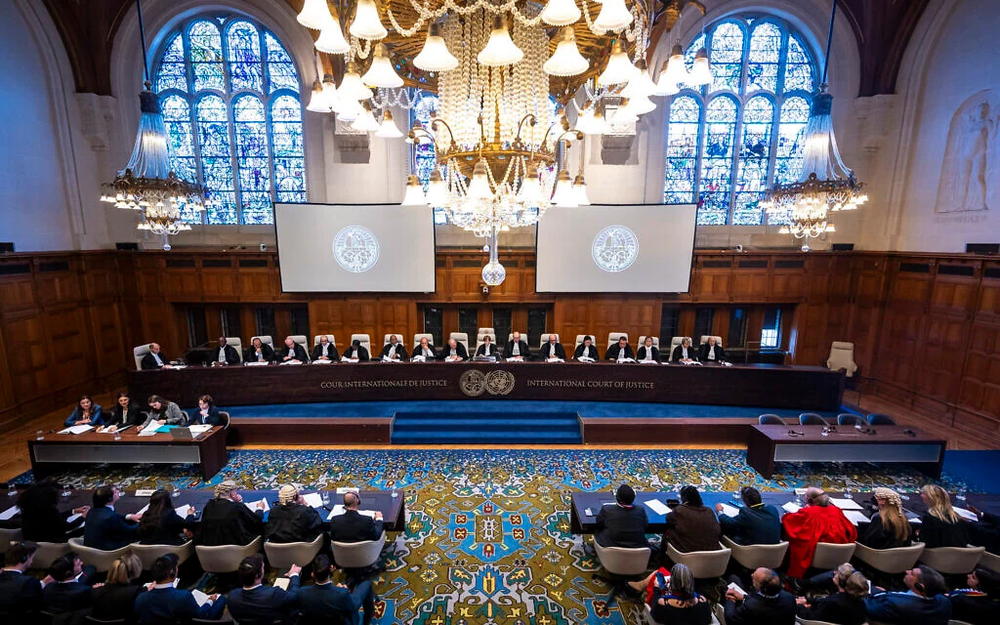

US slaps sanctions on Indian, Turkish firms and people for aiding Iran
US slaps sanctions on Indian, Turkish firms and people for aiding Iran Reuters
يُرِيدُونَ لِيُطْفِـُٔوا۟ نُورَ ٱللَّهِ بِأَفْوَٰهِهِمْ وَٱللَّهُ مُتِمُّ نُورِهِۦ وَلَوْ كَرِهَ ٱلْكَٰفِرُونَ
They want to extinguish the light of Allah with their mouths, but Allah will perfect His light, although the disbelievers dislike it.
Qur'an · As-Saff 61:829,159 stories from 5,082 outlets across 9 regions and 18 desks, over the last 30 days.

US slaps sanctions on Indian, Turkish firms and people for aiding Iran Reuters

The 41-year-old Portuguese legend says he will 'hand back the number 7 shirt' in social media post.

Iran war latest: Third tanker catches fire in Strait of Hormuz, Iranian Navy says The National

Hundreds of thousands of people are expected to take to the streets across France on Thursday, as unions hold strikes alongside student-led demonstrations that have gripped the country for weeks. The high school student movement that began with youth protesting dismal learning co

The food deal, ahead of a UK-EU summit later this month, is the most significant part of the so-called Brexit reset agreed so far.

Prime Minister Mark Carney's second budget — set to be unveiled on Thursday — will include new affordability measures, business tax incentives and investments in infrastructure, defence and culture, according to a senior government source.
New Zealand leaders make final appeals as election remains tight Reuters


Narrated al-Qasim:Aisha said that whenever the Prophet (ﷺ) intended to go on a journey, he drew lots among his wives (so as to take one of them along with him). During one of his journeys the lot fell on `Aisha and Hafsa. When night fell the Prophet (ﷺ) would ride beside `Aisha and talk with her. One night Hafsa said to `Aisha, "Won't you ride my camel tonight and I ride yours, so that you may see (me) and I see (you) (in new situation)?" `Aisha said, "Yes, (I agree.)" So `Aisha rode, and then the Prophet (ﷺ) came towards `Aisha's camel on which Hafsa was riding. He greeted Hafsa and then proceeded (beside her) till they dismounted (on the way). `Aisha missed him, and so, when they dismounted, she put her legs in the Idhkhir and said, "O Lord (Allah)! Send a scorpion or a snake to bite me for I am not to blame him (the Prophet (ﷺ)
Sahih al-Bukhari 5211Fazilet Takvimi publishes no feed or API, so this comes from an open dataset of the classical collections. Check the reference against sunnah.com.
New Zealand leaders make final appeals as election remains tight Reuters

Prime Minister Mark Carney says Russia will not be allowed to compete at next month's world junior hockey championship in Alberta. The International Ice Hockey Federation has yet to address Canada's refusal of the athletes.
Israel president urges compromise after divisive election Al Arabiya English

Midterms over, Democrats plunge into wide-open 2028 presidential race Reuters
Indigenous leaders argue Ottawa’s plan to fast-track the proposed oil conduit is unconstitutional

Russian attacks disrupt power in Kyiv, while the death toll in a stricken village rises to 40 AP News
Türkiye aims to increase the share of renewables in total installed capacity to 77% from the current 63% by 2040, Energy and Natural Resources Minister Alparslan Bayraktar said Thu...
Adnoc Gas is planning to supply natural gas to the Northern Emirates as part of an agreement with Etihad Water and Electricity for new power generation, it said on Wednesday. The move is aimed at exploring future natural gas supply arrangements for new power generation capacity a
Prime Minister Mark Carney's second budget — set to be unveiled on Thursday — will include new affordability measures, business tax incentives and investments in infrastructure, defence and culture, according to a senior government source.

Prime Minister Mark Carney will deliver his second federal budget on Thursday as the Liberal government reveals next steps in its plan to support the country through an affordability crunch and the trade war.

After more than a decade of waiting, the market takes the data point as just another number to crunch.

Unmanaged menopause symptoms are not just impacting women, but costing the Canadian economy $3.5 billion and 540,000 lost workdays every year, according to the Menopause Foundation of Canada.
US slaps sanctions on Indian, Turkish firms and people for aiding Iran Reuters
The food deal, ahead of a UK-EU summit later this month, is the most significant part of the so-called Brexit reset agreed so far.

China’s Yutong Bus, the world’s largest electric bus manufacturer, is seeing its overseas shipments climb steadily, with demand growing rapidly in countries such as Australia, Malaysia, Saudi Arabia and Morocco. Based in Zhengzhou in central China’s Henan province, the company no

A truce has cooled the trade conflict, but neither country has done anything to limit the outbreak of new hostilities Donald Trump ’s trade wars have largely fallen off the headlines. Fears of new tariffs flare up from time to time when the US president goes off the rails – for i

The investor group includes the Canada Pension Plan Investment Board, the Ontario Municipal Employees Retirement System, the Investment Management Corp. of Ontario and the Public Sector Pension Investment Board.
Investor group to buy minority interest in Mitsubishi’s 15% stake in the project
The recent developments in Turkish financial markets amid the investigation following allegations of manipulation and the process of liquidation of dozens of funds are having a var...

Joker, House of Gucci producer and his defunct company found to have misappropriated funds, including by diverting $53.8-million to real estate projects

Many famous cricketers call the UAE home, with Australian great Brett Lee, former India international Robin Uthappa and England batter Alex Hales among those who have settled in the Emirates. Retired England all-rounder Moeen Ali is also part of that group. There are many reasons

November is shaping up to be a busy month for UAE cinemas, with Hollywood blockbusters, Japanese monster movies, Indian productions and Arabic-language releases heading to the big screen. Among the highlights are Godzilla Minus Zero , the sequel to the Oscar-winning Japanese film

After more than 20 years as a professional musician in the UAE, whether recording and performing as a solo artist or co-founding several bands, Emirati soul singer Hamdan Abri has come to realise that longevity is all about creating your own opportunities. This means balancing co

S. Jaishankar said Commonwealth partners need to make more efforts to enhance local distribution, adding that more connectivity corridors are good for business
The 41-year-old Portuguese legend says he will 'hand back the number 7 shirt' in social media post.
Canada's secretary of state for sport dismissed concerns Wednesday that barring Russian players from next month's world junior hockey championship in Alberta could hurt the country's chances of hosting future international events, including the Olympics.
Tashima says he brings ‘honest, sound, upright attitude’ He is understood to have acted with the blessing of Uefa The Japan Football Association’s honorary president, Kozo Tashima, has announced his intention to stand against Gianni Infantino in March’s Fifa presidential electio
Japan's Kozo Tashima has announced his candidacy for Fifa's upcoming presidential election.

The takeover was widely expected to bolster SoftBank's revenue and profit while it awaits a boost from OpenAI's public debut.
Kanwal Preet Singh, 42, was the sole director of four companies that went into receivership or liquidation since March last year.
The search engine company confirmed that it began offering voluntary exit packages in June to some employees in Canada, France, Germany, Japan and Switzerland.

Over 1.3 million devices were affected by the backdoor and botnet.
Iran war latest: Third tanker catches fire in Strait of Hormuz, Iranian Navy says The National
An airstrike on a guerrilla base in Apure state, which borders Colombia, has left at least 20 people dead, according to human rights organizations
Vance’s Break With Trump on Iran Follows Weeks of Handwringing Over War WSJ

Japan says it has spotted PLA aircraft, spy drones and warships, including a supply ship that could support the Liaoning aircraft carrier, in recent days as Tokyo and Washington started drills focused on a potential Taiwan contingency. Three People’s Liberation Army military airc
Hundreds of thousands of people are expected to take to the streets across France on Thursday, as unions hold strikes alongside student-led demonstrations that have gripped the country for weeks. The high school student movement that began with youth protesting dismal learning co

Hospital workers, air traffic and rail staff expected to join industrial action as 70,000 police officers deployed Hundreds of thousands of people are expected to march in demonstrations across France as trade unions call for a nationwide strike expected to extend to hospital wor

ECCO Vietnam halted production at its factory in Bau Bang Commune of Ho Chi Minh City on Monday afternoon to begin dissolution procedures.

Trump says Hegseth doing 'a very good job' as questions swirl about his future Reuters
Joshua Wong, once a teen activist and one of the faces of the "Umbrella Movement," is spending most of his adult life so far in prison.
Wong was sentenced for his second conviction under a Beijing-imposed national security law, in a case that critics say reflects the crackdown on the city's once-thriving pro-democracy movement.

Mahmoud Daifallah Hmoud of Jordan also said shortly after Hamas-led onslaught that Israel committed 'war crimes'; Israeli envoy: Proof of UN’s ‘institutional bias’ against us

A former Royal Bank of Canada employee has been found guilty of three criminal charges after opening fraudulent accounts and viewing the personal banking information of Prime Minister Mark Carney.
The ultimate significance of this undertaking will depend on the quality of the research it supports, the collaborations it attracts and the usefulness of the knowledge it helps preserve and disseminate. But the underlying proposition is clear: an African media institution can do

The UAE's Ministry of Health and Prevention has overhauled its sick leave system, shifting the administrative burden away from patients. Under the new service, licensed healthcare facilities will now submit attestation requests directly on behalf of patients and their companions.

Relatives mourn during the funeral of 17-year-old Palestinian girl Rimas al-Madhoun, who was killed in an Israeli strike on Gaza City, Palestine held outside the morgue of Al-Shifa Hospital on November 4, 2026. [Saeed M. M. T. Jaras – Anadolu Agency] " data-large-file="http

One in five people in Spain was born outside the country — a higher proportion than even in the US

British Prime Minister Andy Burnham confirmed that Vladimir Putin would not be invited to the 2027 G20 summit. This comes amid the intensified Russia-Ukraine war. However, the US has invited Putin to this year's G20, which has drawn criticism from European leaders. Russia continu
Cost of servicing external debt is preventing developing countries from investing for future Debt owed by developing countries rose to a record $9.4tn (£7tn) last year, with the poorest paying the highest interest rates since the late 1980s, World Bank data shows. The UK governme
Technology-driven disruptions, superpower rivalry and global partnerships were among the topics that dominated a closed-door summit in Hong Kong, as countries and tech giants seek to boost growth and lead the race in artificial intelligence. About 100 business owners, executives
Senior Chinese and North Korean officials met on Thursday in the wake of Kim Jong-un’s recent cross-border visit and a renewed drive by the two sides to deepen their relationship. China’s top diplomat Wang Yi struck an upbeat tone on the relationship between the two countries whe

Amid tensions with China, a small European country is anchoring itself at the centre of the global semiconductor and artificial intelligence (AI) hardware supply chain as a laser powerhouse. The latest sign of Lithuania’s growing footprint in the sector came last month, when lase

Türkiye's manufacturing sector's activity contracted in October at the fastest pace since June as declines in output and new orders weighed on performance, a closely watched busine...

Russian President Vladimir Putin has signed into law a deal to build a second standard-gauge railway track at a key border crossing with China, as Moscow looks to accelerate its eastward pivot and boost ties with Beijing ahead of the Apec summit. According to a document posted on

Turkish defense industries chief Haluk Gorgun receives Qatari deputy premier and Defense Affairs Minister Saoud Al Thani in Ankara to discuss advancing joint defense industry projects following signing of Badr pact

French bank Credit Mutuel Arkea says €100 million missing after cyberattack Reuters

Dozens of supermarkets in seven European countries dumped huge quantities of food after refrigerators and freezers were targeted in a cyber-attack.

Hackers managed to steal part of Crédit Mutuel Arkéa's equity capital in an unprecedented attack on European finance.

California-based chip company discloses price of deal first announced in August
It will mark the third consecutive year that a Japanese prime minister has not attended a U.N. climate summit.

Canada does not need to shut down its industries or take a catastrophic financial hit to effectively fight climate change, one of the country's leading climate scientists testified during a landmark trial in a Vancouver courtroom this week.

Climate scientist Prof. Barış Önol told bianet following the Oct 14 floods in İstanbul, which killed seven people, that extreme rainfall would become both more frequent and more intense as a result of the climate crisis.

A mainland Chinese company and its director have pleaded guilty to fraud after submitting falsified certificates to win a HK$52.9 million (US$6.78 million) contract to supply drinking water to civil servants in Hong Kong. The high-profile procurement scandal came to light in Augu

Despite sharing some of his Israel-policy critiques, Jews have a hard time rallying around Senate candidate, with some convinced he wants to sever their ties to the Jewish state

Following an act of vandalism committed on 1 November in northern Israel against a Maronite prayer hall in Nahariya, the Maronite Archeparchy of Haifa firmly asserts that "such acts can neither be justified nor tolerated" and calls on the authorities to conduct an investigation.
After Trump’s return to the White House, Beijing endured a sweeping trade war in 2025 that took tariff rates to triple digits.

Bob Dylan blows in for meeting with Pope Leo at Vatican Reuters
The Turkish central bank resumed its easing cycle last month after an eight-month break, cutting rates by 100 basis points to 36% as it cited recent data and indicators confirmin...
The interest rate set by the Bank of England affects mortgage, loan and savings rates for millions.

The decision is not expected to bring a significant immediate reduction in interest rates on consumer, auto or mortgage loans.
The outgoing chief of the European Central Bank (ECB), Christine Lagarde, called on Europe Wednesday to boost climate-related insurance, invest more in power infrastructure and he...